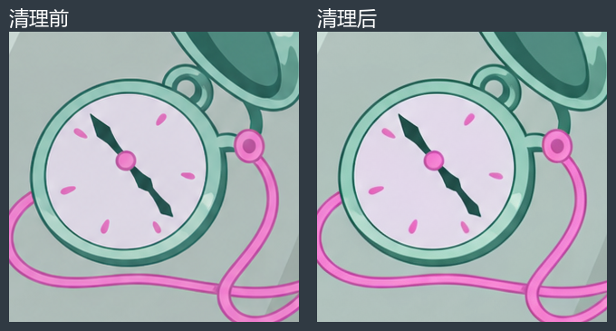
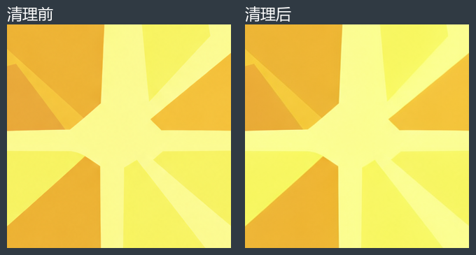
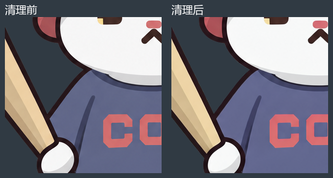
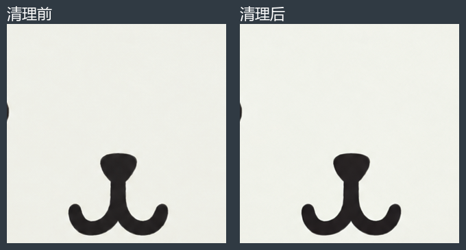
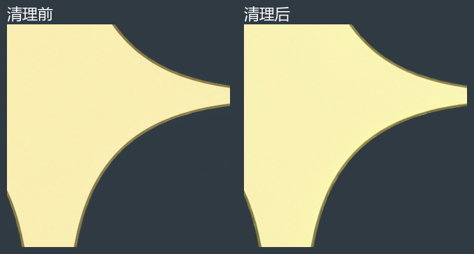
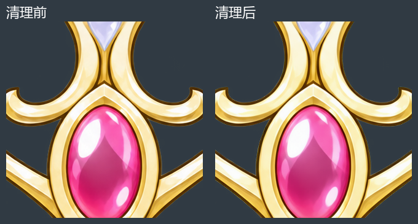

2026-10-11 复核：棒球猫、星形发饰、星之王冠均待返修。本页保留错误稿用于对照，原压缩包不作为可用成品。查看重新核对的真实参考
七件新增遗物 · 待返修草稿
基于 STS1 Karen 素材修复，使用本地 Artifact Cleaner 低强度去纹理。七张均为 1254 × 1254 透明 PNG。
上方展示交付图；下方可逐件检查来源、未清理稿与清理后图片。怀表牌和金色四角星是本轮素材方案，名称尚未全部定稿。
01 · 怀表牌
老 Mod 遗物图标 DrawExtraRelic.png


普通位暂用老 Mod「怀表牌」形象。灰色牌面、绿色怀表和粉色绳索保留；钟面等细小图案含补绘。
100% 局部：清理前后



03 · 小小星
老 Mod otherResources/Star.png


采用老 Mod 的金色四角星素材，保留四角轮廓和明暗分面；并非粉色五角星石块版本。
100% 局部：清理前后

待返修：面部、头盔与SCC字样错误。查看正确参考
04 · 棒球猫
老 Mod 遗物图标 CatRelic.png


保留球棒、红帽、蓝灰球衣和站姿；胸口字样、表情仍沿用上一轮补绘。
100% 局部：清理前后

05 · Mr. White
老 Mod 遗物图标 MrWhiteRelic.png


保留白熊头、圆耳和黑色鼻口；采用上一轮平涂重描稿，没有添加挂链或身体。
100% 局部：清理前后

待返修：参考选择及结构核对不足。查看正确参考
06 · 星形发饰
老 Mod《星光闪耀之时》卡图 Star_p.png


提取一大一小两颗四角星，去掉手和背景，补全上方截断尖角及手指遮挡部分；低分辨率原图未显示的五金结构不另行添加。
100% 局部：清理前后

待返修：冠架比例与白色装饰错误。查看正确参考
07 · 星之王冠
老 Mod 遗物图标 StarCrownRelic.png


保留卷曲镂空冠架和粉色椭圆宝石；使用上一轮椭圆宝石返修稿。
100% 局部：清理前后
